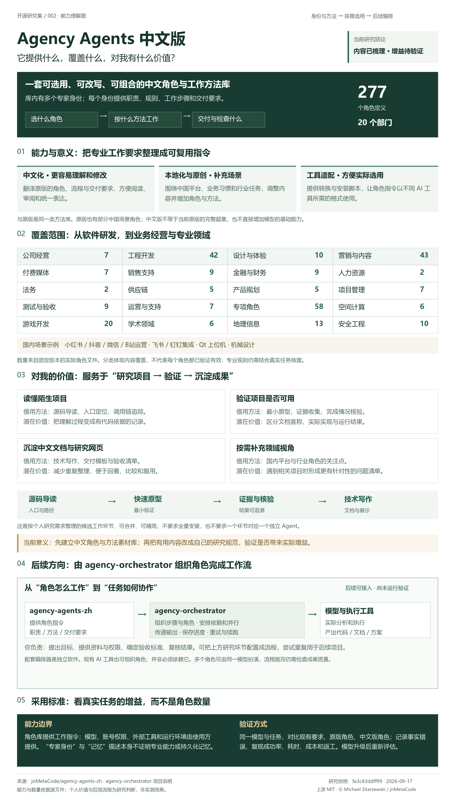

理解与改写工作指令
将角色身份、执行步骤、规则和交付要求转成中文。例如阅读源码时要求逐项引用实际检查过的代码。
查看代码库导读角色 ↗Agency Agents 中文版是一套按身份与领域组织的角色指令库。它翻译与扩展原版的职责、工作步骤和交付要求，加入中国业务场景，并适配不同 AI 工具。对我的意义是为项目研究、运行验证和中文文档沉淀提供可复用方法；后续可由独立的 agency-orchestrator 调度，实际增益仍需验证。
先看一图总览：能力、范围与对我的价值 ↓角色定义
按实际文件核对部门目录
分类数量不代表效果主要内容增量
中文化 · 本地化 · 工具适配延续原版的定位：把它作为可选的角色与工作方法参考库。中文更便于我们阅读和改写；原创角色是否有用，按具体任务验证。
将角色身份、执行步骤、规则和交付要求转成中文。例如阅读源码时要求逐项引用实际检查过的代码。
查看代码库导读角色 ↗覆盖国内内容平台、企业协作和行业任务。例如钉钉集成、Qt 上位机、机械设计等角色提供领域工作指引。
查看作者的来源分类 ↗安装与转换脚本组织角色内容，生成目标配置。支持列表体现适配意图，兼容性和任务效果仍需逐项测试。
查看转换实现 ↗库主要提供第二步的内容。模型能力、账号权限、运行环境和验证过程仍由使用方提供。
从角色库的能力与意义，到个人项目研究的候选工作环节，再到后续由 agency-orchestrator 组织调度。图中将当前已核查内容与后续验证方向分开呈现。

对比固定版本：原版 ad9264e309bd，中文版 fa3c83ddff99。原版统计复用我们此前的文件清单；中文版重新统计，不用首页宣传数字直接判断强弱。
| 维度 | 001 · 原版 | 002 · 中文版 |
|---|---|---|
| 核心作用 | 按角色组织提示词、工作步骤和交付要求。 | 延续相同机制，翻译、改写并补充角色内容。 |
| 语言与使用 | 角色内容以英文为主，可按任务改写。 | 中文内容更便于我们阅读、沟通与维护。 |
| 文件统计 | 279 个角色 / 18 类 | 277 个角色 / 20 类；部门划分不同，数量不是质量评分。 |
| 中国业务场景 | 也有小红书、抖音、微信、飞书等角色。 | 更强调国内业务适配，并增加原创角色；这些场景并非全部独有。 |
| 更新与覆盖 | 直接跟随原版仓库演进。 | 独立维护和同步。追踪文档记录六月基线，不能据此声称覆盖当前原版全部内容。 |
| 多角色协作 | 包含编排者角色与协作流程文本。 | 同样有编排角色；另推荐搭配独立软件 Agency Orchestrator。 |
| 基础模型能力 | 由所用模型和工具提供。 | 中文角色与新增身份不会直接扩充基础模型能力。 |
作者将部分角色标为原创，说明其来源归类。原版也已包含一些同类角色；判断差异需要对照具体内容，不能从原创数量推导独有能力数量。中文版也不能直接视为当前原版的完整超集。
我们的任务是研究 GitHub 项目、核对能力、做可复现演示并沉淀中文文档。对这一流程，中文版的优先价值是降低阅读与改写成本；专业角色能否改善产出，需要任务对照。
借用代码导读、技术写作和证据核验的中文工作步骤，整理成我们自己的检查清单。
遇到飞书、钉钉、内容运营或工业工具项目时，参考相应角色提出的关注点与交付要求。
中文版本易读不等于在代码研究上更强。原版的六个初选候选仍是参考，不要求完整迁移或全量安装。
如果之后要研究自动组队、任务依赖和执行恢复，再单独考察配套编排软件。
统一输入材料、权限与交付标准，在独立会话中运行；记录事实错误、来源可追溯性、复现成功率、耗时和返工次数。先确认适用性，再在多个任务上重复验证。模型升级后重新评估，不把单次结果永久推广。
这里展示能力覆盖范围，不代表已经逐一验证效果。展开部门可直达固定版本的源文件；可按中文名或英文文件名查找角色。
共 277 个角色 · 20 个部门
没有找到匹配角色。可尝试更短的关键词或切换为全部部门。
战略、技术、产品、营销与运营决策视角。
软件架构、编码、文档、企业平台集成与工业开发。
界面、用户研究、品牌与图像视频提示方法。
内容策划、平台运营、搜索增长与中国市场场景。
广告账户分析、投放策略与创意评估。
客户研究、售前方案与销售过程管理。
财务分析、金融研究与规划工作方法。
招聘与绩效管理相关的工作指引。
合同与法律事务的分析、检查和文档组织。
采购、供应商与物流协同的工作方法。
需求、反馈、优先级与产品方向分析。
任务拆解、进度协调、交付与实验跟踪。
测试方案、证据收集与完成情况核验。
客户支持、业务分析与日常运营流程。
编排、知识管理及多种细分行业工作方法。
XR、沉浸式界面与空间交互开发。
游戏设计、引擎、技术美术、音频与叙事。
不同学科的专业分析与研究表达。
空间数据、遥感、地图与三维地理场景。
威胁分析、安全审查与防护流程。
| 库里写到的内容 | 实际使用时如何理解 |
|---|---|
| “你是某领域专家” | 建立任务视角，不证明模型拥有相应经验或专业资质。 |
| “身份与记忆” | 属于角色描述；长期记忆和状态持久化需要执行环境支持。 |
| 飞书、钉钉、平台运营 | 提供开发或运营指导；调用真实平台仍需账号授权、接口与执行工具。 |
| 自动编排、质量循环 | 角色文件描述协作要求；调度、重试和恢复需要运行系统落实。 |
| 专业规则与交付指标 | 属于待核查的工作要求。固定阈值、平台规则和技术示例可能不适合当前任务。 |
| 支持多种 AI 工具 | 格式转换与安装不等于兼容性已实测，更不等于效果提升已证明。 |
固定两个库的比较版本；统计中文库 277 个角色、20 个部门；阅读重点角色、上游同步记录与转换实现，建立完整角色链接清单。
尚未安装角色、逐项测试工具兼容性、运行编排软件或做效果对照。网页验证只说明展示正常，不代表上游能力已经验证。
实际文件核对为 277 个角色；首页规模表和角色清单标称 213 个翻译、64 个原创。README 正文仍出现 63 个原创、268 位在线专家等旧数字，UPSTREAM.md 仍记载六月的 266 个。我们采用本次文件统计；翻译 / 原创归类属于作者标注，未做独立溯源审计。
{kind=link}